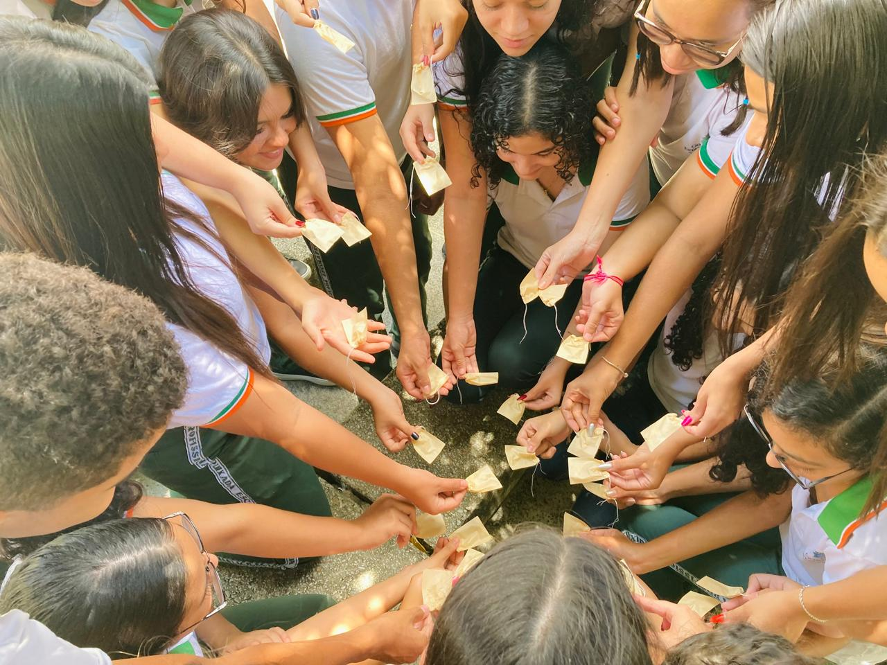
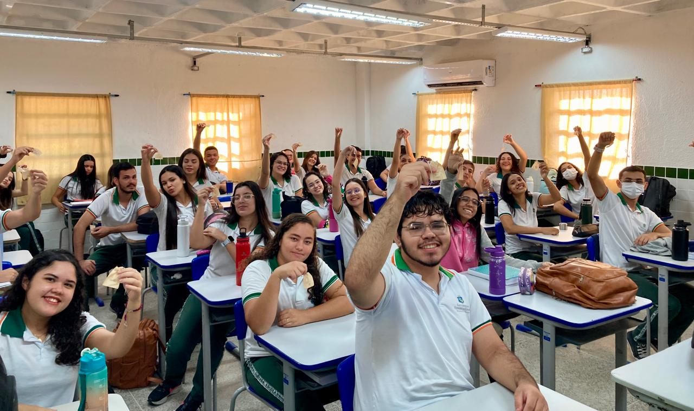
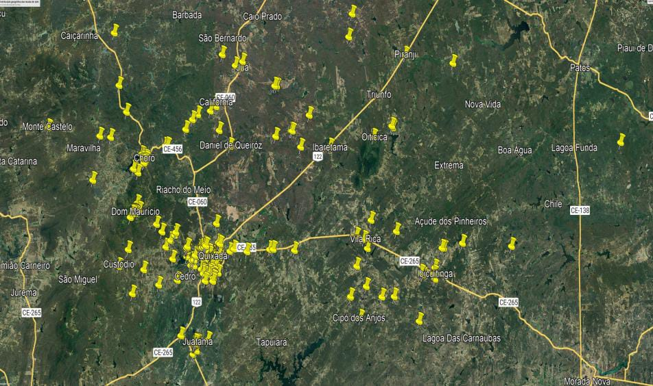

Dispersão Consciente, atua na interface entre combate a desigualdade social e sustentabilidade, contribuindo para a mitigação das mudanças climáticas por meio do reflorestamento estratégico com espécies nativas, além de facilitar o acesso de populações periféricas a um ambiente arborizado, corroborando para a asseguração de seus direitos.
A iniciativa, realizada em comunidades periféricas do município de Quixadá, fundamenta-se na redução da desigualdade ambiental visualizada entre os extremos da sociedade. Ademais, busca diminuir a concentração atmosférica de CO₂ e na promoção da dispersão consciente de mudas.
Além do impacto social e ambiental direto, o projeto fortalece a formação de valores democráticos, ao promover a igualdade de direitos ambientais entre pessoas da sociedade, outrossim valores cooperativos e sustentáveis.

O projeto iniciado em fevereiro de 2025, recebeu uma continuidade e um novo objetivo em 2026. Realizado por meio de palestras e práticas de plantio nas comunidades periféricas de Quixadá, a iniciativa abrangeu estudantes e moradores dessas comunidades. Esse ato contribuiu para o fortalecimento da arte do pertencimento, ao englobar a participação de todos, na ação em prol dos direitos dessas comunidades.

O objetivo geral do projeto é levar a educação ambiental e o acesso a arborização para as áreas periféricas da cidade de Quixadá, em busca de amenizar a desigualdade social. Nesse sentido, os objetivos se fundamentam em inicialmente, levar o projeto para escolas localizadas em regiões marginalizadas e contribuir para a dispersão consciente de plantas, o que contribuiria no combate ao aquecimento global, além de ajudar na formação de uma sociedade consciente, democrática e informada acerca dos problemas mundiais.
